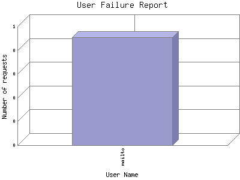

Analog 5.24
Analog 5.24 Report Magic for Analog 2.13
Report Magic for Analog 2.13The User Failure Report lists user names that were used in an attempt to gain access to a secure area within the site but were denied access. Access can be denied for two reasons: either the password was entered incorrectly or the user name was not valid.
This report shows the first 20 results by number of requests. This report is sorted by number of requests.

| User Name | Number of requests | |
|---|---|---|
| 1. | mailto | 1 |
Report time frame October 24, 2014 18:22 to October 24, 2014 18:22.
This report was generated on April 3, 2016 02:21.
Report time frame October 24, 2014 18:22 to October 24, 2014 18:22.
| Web statistics report produced by: | |
| Analog 5.24 | Report Magic for Analog 2.13 |